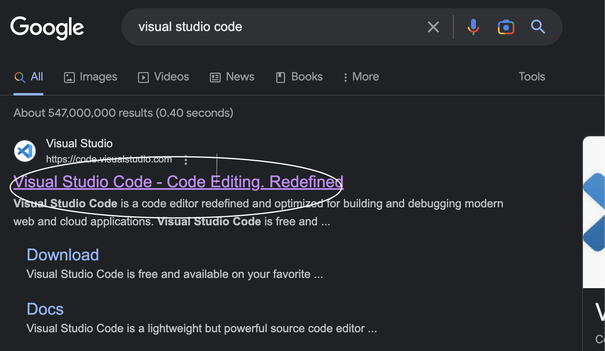
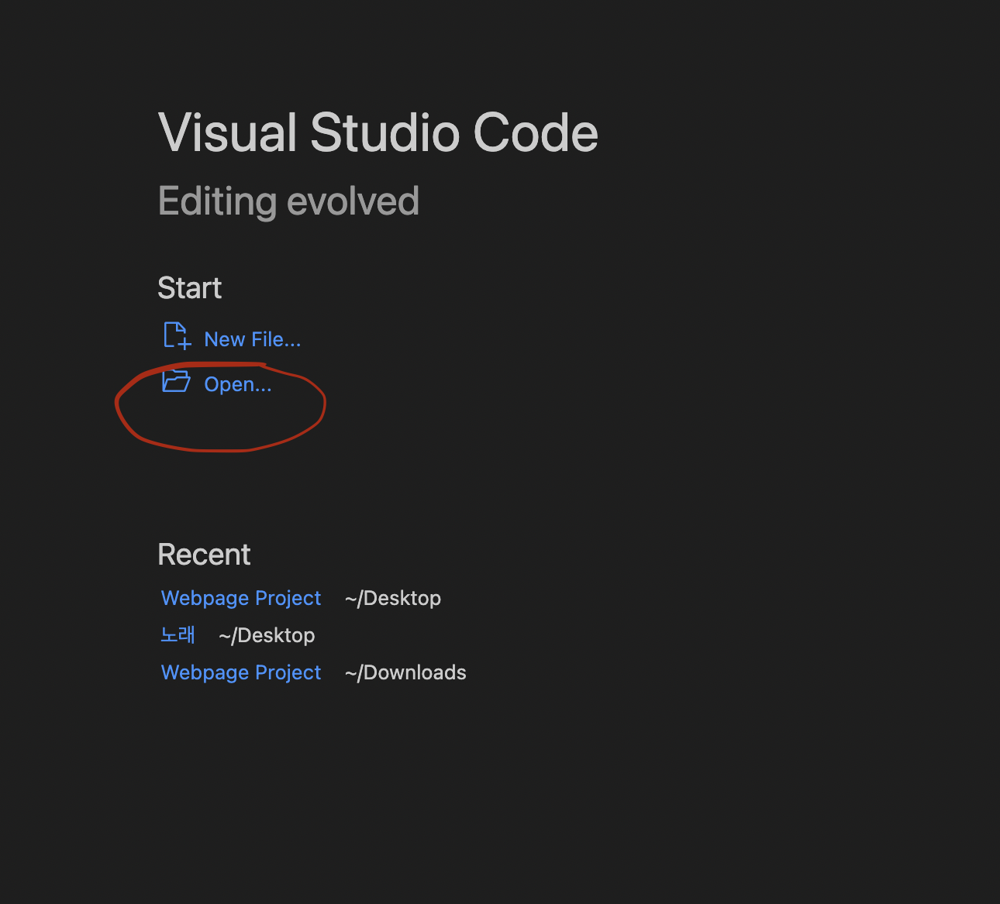

Search "Visual Studio Code" on internent (Google, Naver, other search engines). Website named Visual Studio will pop up on the top. Get in to the website, and click 'Download'.
After finishing the download, open the application. Open up your Finder and go to downloads tab. Right click (Click with 2 fingers on your touch pad)the top part that's named Folder. Create a new folder, and give it a appropriate name by right clicking the folder.
Open up the application that you just downloaded, click 'Open' with folder icon beside. Find the folder that you just made, and open it up. Then, click 'new file' which is placed up on the 'Open' button.
Create index html and start your code there.
Copy down the written code in the image below.
Learn how to code the website in code.org lessons.
Visit the website called 'github.com', and make a account there. Click on the plus sign in the dashboard. Click on New Repostries. There, upload your website file 'index.html', images, and your style css. Write down descriptions, and when you click on the green button, your website is now uploaded!
To create a webstie, you should first download one application. It's called 'Visual Studio Code'. Then, create folder in your finder. For further convenience, give your folder a appropriate name. Go back to the app, create two new files. One of them will be style.css and another one will be index.html. Learn how to code a website in Code.org, and start making your own webstie in Visual Studio Code. Lastly, upload your website in github.com.
Visit new website